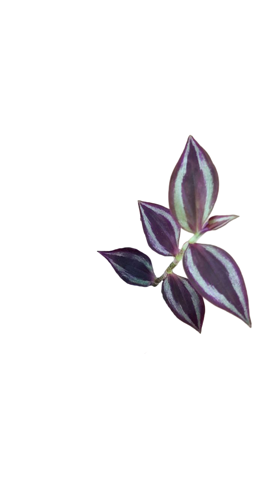
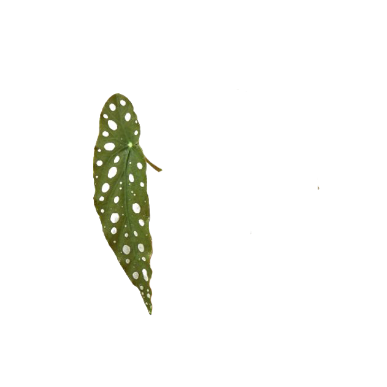
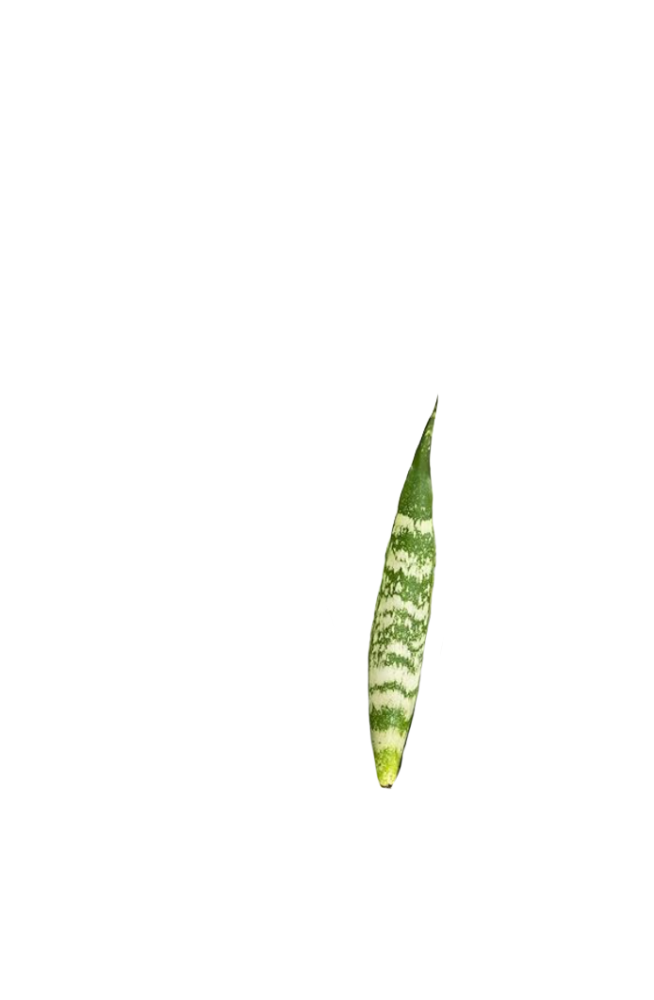
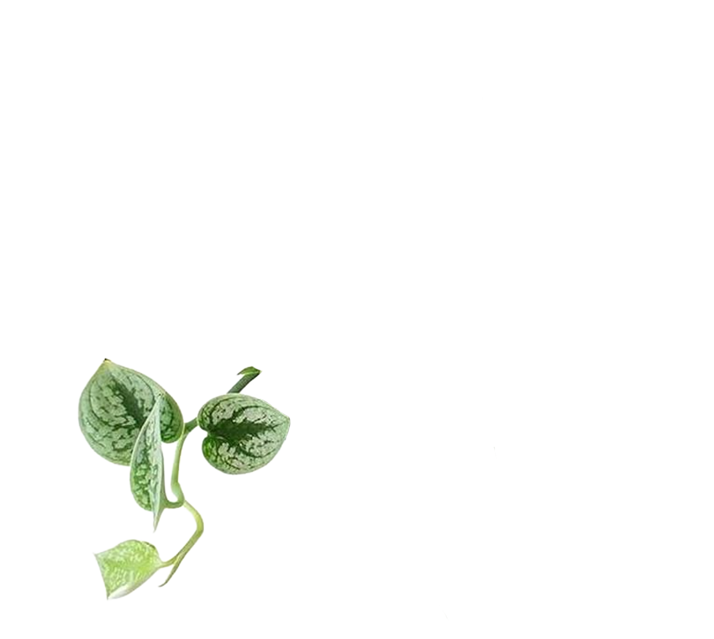
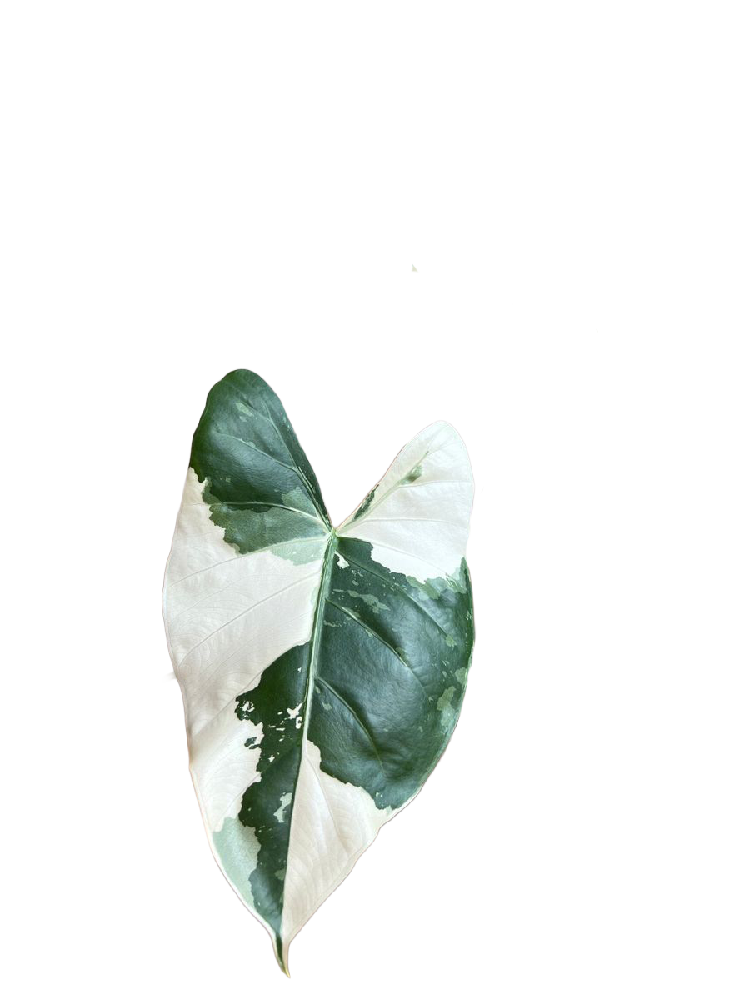

Personal Thoughts: I am obsessed with plants. Any time I am having a really bad day, my go-to place is a plant store. I love how much they can breathe life into a space — I mean, they are living after all.
The Plant Impact: Indoor plants have a measurable positive impact on mental health, mood, and overall well-being. Caring for plants can reduce stress, improve productivity, and create a calming environment.
Scientific research suggests that interacting with indoor plants can have measurable psychological and physiological benefits. In a controlled study, participants who engaged in a plant‑related task such as transplanting exhibited significantly lower stress responses compared with those performing a computer‑based task. After working with plants, participants reported feeling more comfortable, soothed, and natural — emotions associated with lowered stress — while physiological measures also supported these findings, with reductions in diastolic blood pressure and sympathetic nervous system activity, which is linked to stress responses.
This research suggests that even relatively short periods of plant interaction — such as repotting or tending to foliage — can activate the parasympathetic nervous system, which promotes relaxation and a calmer state of mind.
Moreover, broader reviews of studies on indoor greenery indicate that plants don’t just make spaces look nicer — they influence the way we feel and think. Evidence from multiple studies shows that indoor plants are associated with improved mood, reduced anxiety, and enhanced cognitive performance. For example, people in rooms with real plants often report greater feelings of comfort, calmness, happiness, and focus than in rooms without them. These effects appear even with a small number of plants placed within a few meters of a person’s typical space.
The physiological impact is backed up by research showing changes in things like heart rate variability and blood pressure — both traditional indicators of stress — when people move from mentally demanding tasks to plant‑related activities. This suggests there’s not just a subjective feeling of relaxation, but a measurable calming effect on the body as well.




